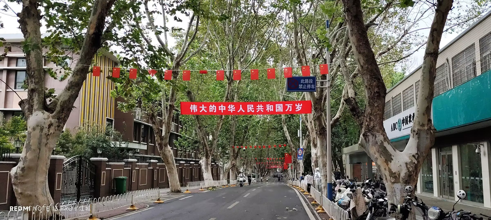
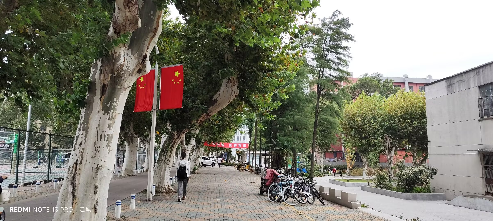
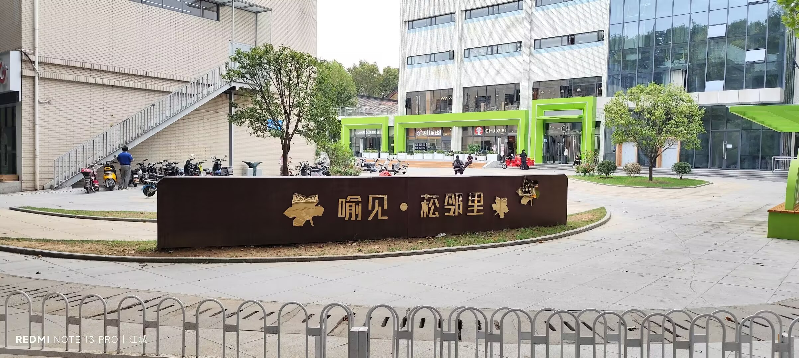
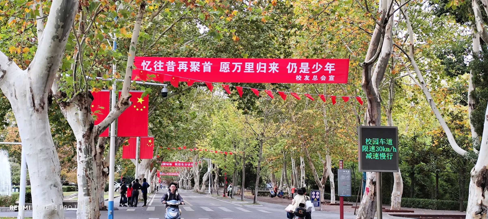
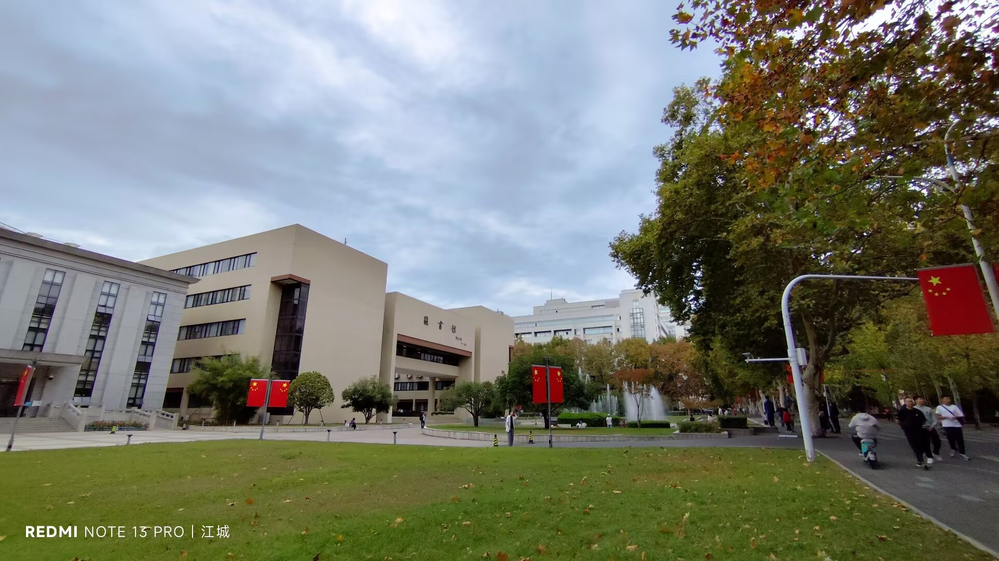
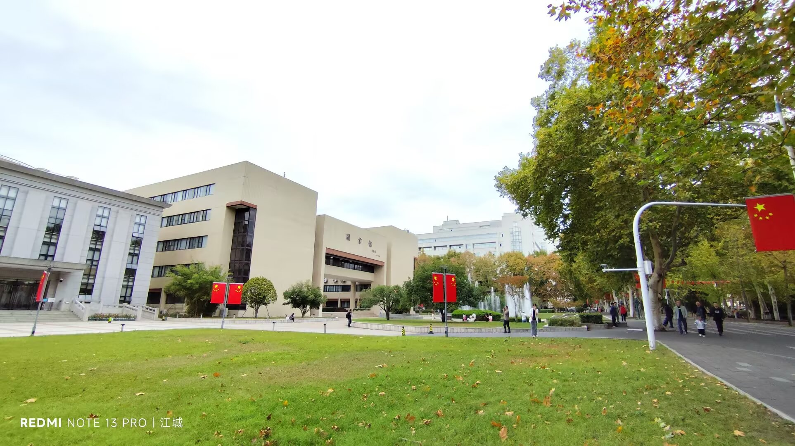

Journal · 2024-10-01
湖北省武汉市
“人生到处知何似，应似飞鸿踏雪泥。”生命中的飞鸿转瞬即逝，留给我们无尽的伤感和回味！
不得不说，乔纳斯真是少年英杰！






“To what does life everywhere resemble? It should resemble a wild swan alighting on snow and mud.” The wild swan in life is fleeting, leaving us endless sorrow and reminiscence!
I must say, Jonas is truly a young hero!
« À quoi ressemble la vie en tout lieu ? Elle ressemble à un cygne sauvage se posant sur la neige et la boue. » Le cygne sauvage de la vie passe en un éclair, nous laissant une tristesse et un souvenir infinis !
Il faut le dire, Jonas est vraiment un jeune héros !
„Wie gleicht das Leben überall? Es gleicht einem Wildschwan, der sich auf Schnee und Schlamm niederlässt.“ Der Wildschwan des Lebens vergeht im Nu und hinterlässt uns endlose Trauer und Nachhall!
Man muss sagen, Jonas ist wahrlich ein junger Held!